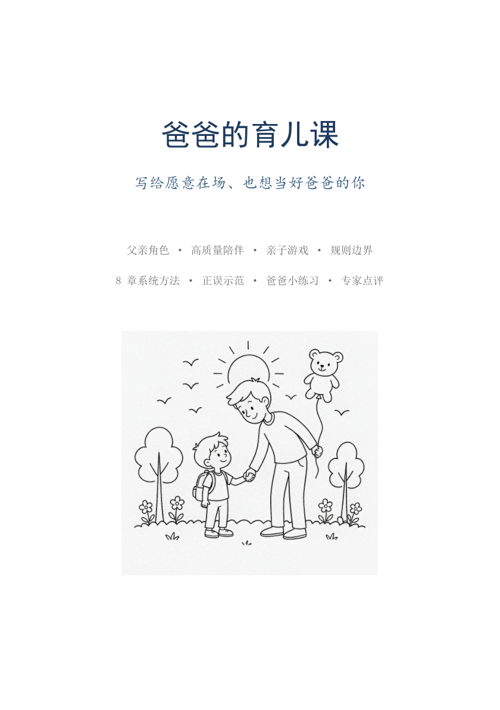
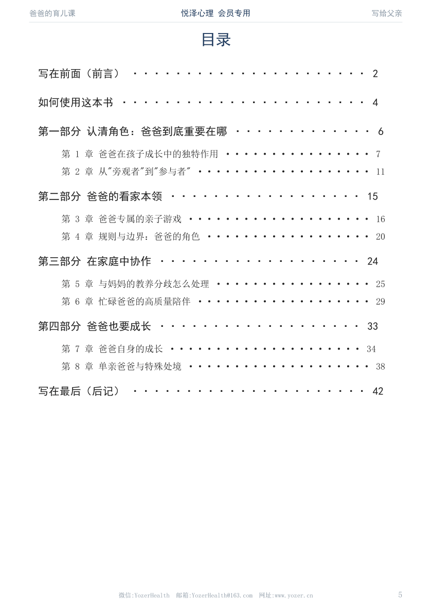
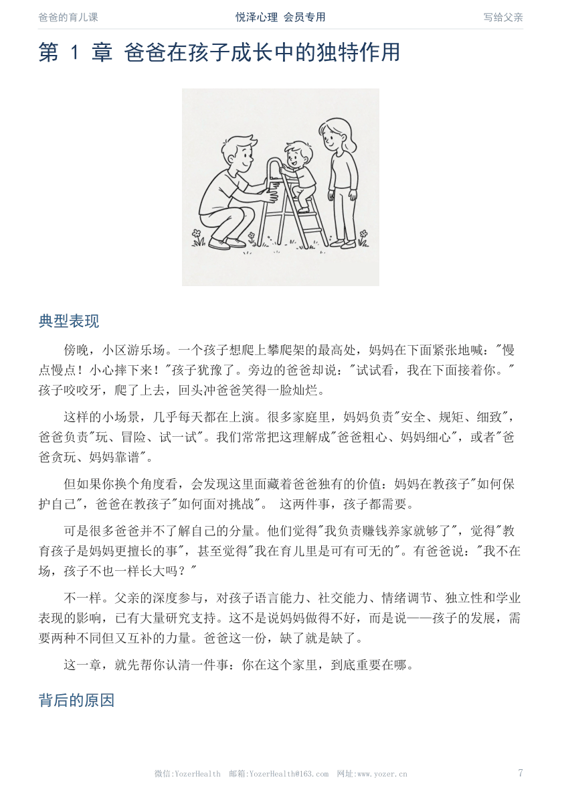
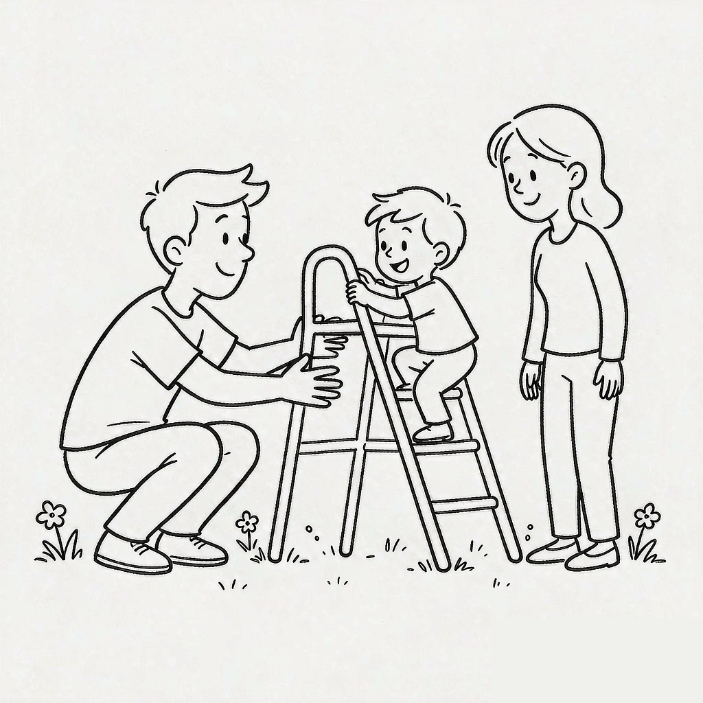

01
认清角色
2 章独特作用、从旁观者到参与者——先看清爸爸到底重要在哪。
写给愿意在场、也想当好爸爸的你
育儿书的主角几乎总是妈妈，专写给爸爸的书是明显的空白。这本书从父亲的独特作用出发，陪你从"旁观者"变成"参与者"——从亲子游戏、规则边界到夫妻协作、高质量陪伴，再到爸爸自身的成长。语言直接、方法实用，帮你找到属于"爸爸"的那种育儿方式。在场，就是最好的教育。

封面与内页样张来自电子书原稿
翻开这本书之前，先听听作者想说什么
一位爸爸在咨询室里说起一件让他困惑的事。
那天周末，他难得在家，想陪四岁的女儿玩。他把孩子举高高、转圈圈，孩子咯咯地笑。可玩着玩着，女儿突然说："爸爸，你陪我搭积木嘛，像妈妈那样。"他愣了一下——他会陪孩子疯、会带孩子跑，可真要安安静静坐下来搭个积木、讲一本绘本，他竟有点不知所措。
"我不是不想陪，"他说，"我是真不知道该怎么陪。感觉带孩子这件事，妈妈样样都在行，我好像只会逗她笑。"
这句话，说出了很多爸爸的心声。
在我们的社会里，育儿长期被默认成"妈妈的事"。育儿书、亲子课、家长群，主角几乎都是妈妈；爸爸偶尔出现，常常是"帮忙"的角色——"你去陪孩子玩一会儿""你看一下他的作业"。于是很多爸爸慢慢习惯了一个位置：自己是育儿的"旁观者"和"助攻"，而不是"主力"。
但越来越多的研究和实践告诉我们一个朴素的事实：爸爸在孩子成长中的作用，不是妈妈的替代，也不是妈妈的反面，而是独一无二、不可替代的。爸爸带孩子，往往更爱玩、更爱冒险、更鼓励孩子试一试；爸爸在规则、边界、独立、抗挫这些方面，有着天然的存在感。孩子需要的不是"一个更像妈妈的爸爸"，而是"一个更像爸爸的爸爸"。
这本书就是写给这样的你的：你可能工作很忙，你可能不知道从哪儿下手，你可能在"我到底该做什么"里困惑很久。但你想在场，你想当一个好爸爸——光是这份心意，就已经是很好的开始了。
全书八章，从爸爸的独特作用讲起，依次走进"如何从旁观者变成参与者"、爸爸专属的亲子游戏、规则与边界、夫妻教养分歧、忙碌爸爸的高质量陪伴、爸爸自身的成长，最后落到单亲与特殊处境。每一章都循着同一条路：从你熟悉的生活场景切入，讲清背后的道理，给出可以照着做的建议，配正误示范，再邀你做一次自我检视。
开始之前，有三件事想先说清楚。
第一，参与育儿不意味着你要变成"第二个妈妈"。这本书不是让你照着妈妈的方式再来做一遍。你的价值，恰恰在于你和妈妈不一样——你的方式、你的风格、你带给孩子的那种"爸爸式的"体验，是妈妈给不了的。别拿妈妈当标尺衡量自己，找到属于你自己的方式。
第二，做得不完美，也远远好过缺席。你可能会笨手笨脚，会没耐心，会边学边错。这些都不要紧。对孩子来说，一个"总在、愿意陪、会出错也会道歉"的爸爸，比一个"完美但遥远"的爸爸珍贵得多。在场，本身就是最重要的天赋。
第三，这本书不能替代专业的心理帮助。书里讲的是普遍规律和自我调整的方法，适用于日常养育。如果你正经历持续两周以上的情绪低落、强烈的焦虑或易怒、失眠，或者发现自己有伤害自己或孩子的念头，又或者家庭正处在剧烈的冲突与危机中——请立即寻求心理咨询师、精神科医生或其他专业机构的帮助。照顾好自己，有时候意味着承认"我需要别人帮一把"，而这正是勇敢的表现。
还要说明：书中所有人物与故事均为虚构，是多种真实情形的综合，请勿对号入座。书中没有"标准答案"，只有可供你参考、并根据自己家庭情况调整的思路。
最后，想把一句话送给你，它是全书的核心——
孩子需要的，从来不是一个满分爸爸，而是一个愿意在场、并且不断学习的爸爸。你翻开这本书的此刻，就已经走在成为这样的爸爸的路上了。
愿这本小书，成为你育儿路上一位可靠、不啰嗦的同行者。
按“认清角色—看家本领—家庭协作—爸爸成长”四部分编排，层层深入
独特作用、从旁观者到参与者——先看清爸爸到底重要在哪。
爸爸专属的亲子游戏、规则与边界——发挥爸爸的独有优势。
与妈妈的教养分歧、忙碌爸爸的高质量陪伴——在家庭中找到位置。
爸爸自身的成长、单亲与特殊处境——育儿也是一次重新成长。
统一的章节结构，先讲清背后的道理，再给出可以照着做的具体方法
从爸爸熟悉的真实场景切入，看懂孩子的反应
用发展心理学讲清机制，不焦虑、不贴标签
每条配实例情景，含错误示范与正确示范
对照着看"这样说"和"那样说"的差别
点破常见误区，避免越想帮忙越添乱
从专业角度收束，讲清原理与求助边界
8 章 · 附真实页码 · 点击上方按钮可快速跳转试读
以下为第 1 章节选，体验"原理 + 建议 + 正误示范 + 爸爸小练习"的编排
傍晚，小区游乐场。一个孩子想爬上攀爬架，妈妈在下面紧张地喊："慢点慢点！小心摔下来！"孩子犹豫了。旁边的爸爸却说："试试看，量力而行，我就在旁边。"他先确认了器械适合孩子年龄、地面有软垫，然后在一旁近距离护着。孩子咬咬牙，爬了上去，回头冲爸爸笑得一脸灿烂。
这样的小场景，几乎每天都在上演。很多家庭里，妈妈负责"安全、规矩、细致"，爸爸负责"玩、冒险、试一试"。我们常常把这理解成"爸爸粗心、妈妈细心"，或者"爸爸贪玩、妈妈靠谱"。
但如果你换个角度看，会发现这里面藏着爸爸独有的价值：妈妈在教孩子"如何保护自己"，爸爸在教孩子"如何面对挑战"。这两件事，孩子都需要。
可是很多爸爸并不了解自己的分量。他们觉得"我负责赚钱养家就够了"，觉得"教育孩子是妈妈更擅长的事"，甚至觉得"我在育儿里是可有可无的"。有爸爸说："我不在场，孩子不也一样长大吗？"
不一样。父亲的深度参与，对孩子语言能力、社交能力、情绪调节、独立性和学业表现的影响，已有大量研究支持。这不是说妈妈做得不好，而是说——孩子的发展，需要两种不同但又互补的力量。爸爸这一份，缺了就是缺了。
这一章，就先帮你认清一件事：你在这个家里，到底重要在哪。
爸爸的作用，不是"第二个妈妈"，而是"另一种养育"。发展心理学里有一个长期被关注的主题：父亲与母亲的养育方式，往往有明显差异。整体而言，母亲更多表现为细腻、保护、情感回应；父亲更多表现为游戏化、鼓励探索、推动孩子独立面对挑战。这种差异不是谁对谁错，而是恰好互补。孩子同时拥有这两种体验，才能既学会安全与共情，又学会勇敢与独立。
"粗放式游戏"，是爸爸给孩子的特殊礼物。研究者观察到，父亲更倾向于和孩子玩身体性、有一定"刺激"的游戏——举高高、追逐、打闹、假装战斗。这类游戏在安全范围内，让孩子学会控制身体、读懂别人的表情和意图、练习"闹到什么程度要停"。这不是没正形，而是一种高级的社会性学习。很多爸爸以为自己"只会逗孩子笑"，其实那正是孩子学习情绪和规则的课堂。
爸爸是孩子走向外部世界的"桥梁"。妈妈常常代表"家内部的温暖与安全"，而爸爸往往更多带孩子走向外部——去探索、去冒险、去和陌生人打交道、去面对失败。爸爸对"试一试""没关系再来""自己想办法"的推崇，会一点点塑造孩子的抗挫力和独立性。一个在爸爸鼓励下长大的孩子，往往更敢尝试、更能接受失败。
父亲的缺席，是一种真实的"损失"。研究一致发现，父亲长期缺席（无论是因为忙碌、疏离还是离开），与孩子在情绪、行为、学业等方面的风险升高相关。反过来，父亲稳定而温暖的参与，与孩子更好的社会适应、更少的行为问题相关。请注意，这里说的是"相关"和"风险"，不是宿命——它提醒我们的是：爸爸的在场，值得认真对待。
建议一：先把"我是主力之一"这件事，在心里立住。
很多爸爸的缺席，不是因为不想陪，而是从没把自己当成"育儿的主力"。改变，从身份认同开始。请在心里把这句话说给自己听："我不是帮妈妈带孩子，我是在养我自己的孩子。"当你把自己从"帮忙者"变成"责任人"，很多行为会自然跟着改变——你不再等妈妈分配任务，而是主动问"今天我能陪他做什么"。
建议二：找到你的"主场"，从你擅长的事做起。
不必强求自己样样都行。你擅长运动，就带孩子跑跳、打球；你擅长动手，就带孩子拆装、修理、做小手工；你讲故事有趣，就把睡前故事变成你的保留节目。从你舒服、擅长的事情切入，你更容易坚持，孩子也能感受到你真实的快乐。
建议三：把"鼓励冒险"用对地方。
爸爸鼓励孩子试一试，是优势，但也要有分寸。鼓励冒险，不是让孩子做危险的事，而是在确保安全的前提下，给孩子"再试一次"的空间。孩子爬攀爬架，你在下面护着、给一句"我在"，而不是一把抱下来，也不是完全不管。"我在这里，你可以试"——这句话，是爸爸给孩子最好的底气。
请找一个安静的时刻，完成这份"我的爸爸资源清单"：
我擅长什么？（运动、动手、讲故事、唱歌、讲笑话……至少写三项）
在这些事里，哪一件是我愿意每周陪孩子做一次的？
回想我的童年，我爸爸（或抚养我长大的人）带给我最深的印象是什么？
其中哪些，是我希望延续给孩子的？哪些，是我希望修正的？
我这周可以做的一件"从旁观者变成参与者"的小事是什么？
写完以后，从第 5 题里挑一件，这周就去做。清单的价值，不在写，在做。
把"赚钱养家"当成不参与的借口。挣钱重要，但它不能替代陪伴。孩子要的不是一个只提供物质的爸爸。
只会"逗"，不会"教"。逗孩子笑很棒，但如果陪伴只有打闹，就少了规则、对话和成长的机会。逗与教，可以兼有。
拿妈妈当标尺。你不是妈妈，也不必成为妈妈。用你的方式参与，才可持续。
"我在场，但人在心不在"。抱着手机刷短视频地"陪"孩子，孩子感受得到你的心不在焉。人在，心也要在。
把鼓励冒险变成鲁莽。鼓励尝试不等于放任危险。安全底线要守住，才谈得上探索。
父亲在儿童发展中的作用，是现代发展心理学和家庭研究反复确认的重要议题。大量研究表明，父亲的温暖参与与孩子更好的社会情绪发展、更高的自尊、更强的独立性相关；而父亲的长期缺席，则与一系列风险相关。需要强调的是，这些是群体层面的统计规律，落到每一个具体的家庭，影响会因孩子的气质、家庭的处境、母亲的参与等因素而不同。
对爸爸个人而言，最重要的一步，往往不是学会某项具体技能，而是完成一个身份上的转变——从"我帮妈妈带孩子"，到"我是孩子重要的养育者之一"。一旦这个转变发生，行动会自然跟上。你不需要成为一个完美的爸爸，你只需要成为一个愿意在场、并且相信自己在场很重要的爸爸。这份相信，本身就是孩子成长中最坚实的一块基石。
—— 以上为节选，完整内容见电子书 ——
真实排版预览 · A5 竖版 · 黑白简笔画插图



图片为文档内嵌样张，仅作版式展示
| 项目 | 说明 |
|---|---|
| 书名 | 爸爸的育儿课 |
| 副标题 | 写给愿意在场、也想当好爸爸的你 |
| 读者对象 | 0—12 岁孩子的父亲与准爸爸 |
| 篇幅 | 8 章 · 约 2.6 万字 · 43 页 |
| 版本 | A5 版（148×210mm） |
| 格式 | PDF 电子书 |
| 插图 | 9 张黑白简笔画题图 |
| 结构 | 四部分 · 每章六步 · 正误示范 + 爸爸小练习 |